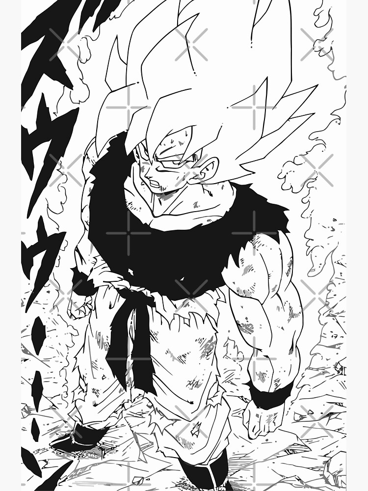

HISTORIA la historia empieza en el planeta veggita , de donde
el sayiajin kakaroto , al ser trasladado al planeta tierra su nombre se cambia a son goku.
FAMILIA DE kakaroto
kakarot tiene un padre y una madre , su hermano mayor , los cuales vivieron lejos de
goku sus nombres son:
PAPAS
BARDOCK - MADRE DESCONOCIDA
HERMANOS
CUENTA CON UNO SOLO LLAMADO RADITS
PERSONAJE FAVORITO
kakaroto es un buen personaje pero siempre voy a tener como personaje favorito a
monkey D.luffy de ONE PIECE una obra japonesa creada por oda ichiro
kakaroto
kakaroto un sayiajin , del planeta veggita donde nace el siendo un guerrero de clase baja
al crecer el logra obtener un poder superior a los guerreros de su planeta dejando a
los sayajines de su planeta en shock.
kakaroto
en esta forma se encuentra la base principal con un nivel de
poder facil de controlar
kakaroto SJ1
es una fase con un poder muy superior al normal , capaz
de destruir planetas enteros
kakaroto SJ2

ENLACES
Los enlaces a continuacion llevan a google y la pagina web del colegio camilodaza